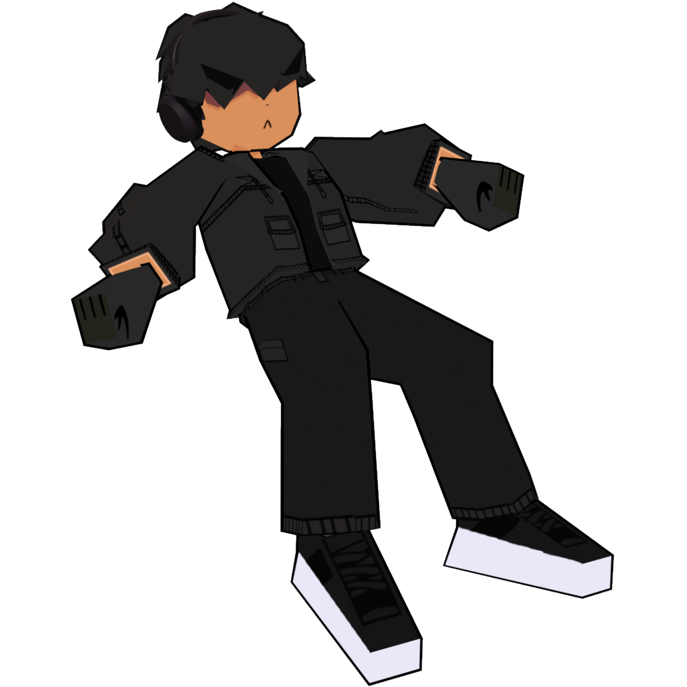

Mondo's website

Welcome to my small Website :D!
It will act as a activity monitor for me to share my projects.
Basically a bunch of links and stuff I am working on + a blog (press the switch button;).
I'll update it whenever I have something new to share.
Software I use
• Blender <3
• ibisPaint
• Aseprite
• PicsArt
• Adobe Premiere :/
Likes
• Indie Games (Boomer Shooters, Movement, Speedrun)
• Double layer shirts
• Thrifting (Physical Media, Clothes, Tech)
• Pocketable Handhelds ( With CFW )
• Warm lights
• Debian
• Shapekeys
Dislikes
• Doomscrolling
• Generative AI
• People on Sketchfab gatekeeping their 3d Models
• Sideloading on an Apple device
Blog 21/11/26
I finally decided to build a website
This is the first blogpost on my dsi themed website :D
The DSi was cool, but I use my 3DS more often nowadays
I tried fixing my DSi in order to play my DS games at native resolution.
However I don't have a soldering iron :/
I also modded a psp.
Playing ps1 games on it is fun :)
So far I played THPS 2, Silent Hill, jojos, parappa and the lain game
+ a lot of Tony Hawk Underground 2 remix.
-Mondo